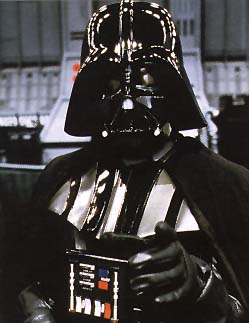

Forums galactiques > Assemblée Galactique : diplomatie officielle > aide
Pages : 1
| Dark Vador  01/06 ETU 20:33 | mon ami ross a besoin de vous, il est en guerre avec doc, un general qui pense qu'au pouvoir il veu tout le systeme 28, don ross vi depuis longtemps trankillement avec ses alliés qui sont deja mor par les armé du general doc . les otr peuple lon accueilli comme des con, car il son mort ! sauf ross et "V.venam" |
Justicar 01/06 ETU 20:44 | Il est regratble que le commandant Doc s'attaque a de petit commandant sans puissance de feu pour riposter. Doc, saissez immediatement ces attaque ou nous seront obligés d'intervenir pour vous en empecher |
Doc 01/06 ETU 21:32 | je tiens à souligner que le Commandeur Ross est en fait venu me menacer. Je cite : "Qui est tu doc ? vien tu ici pr les planetes, alors je serai sur ton chemin, tu risque de voir mes alliés et ma force si tu continu. reponds sous les 24h sinon je serai obligé de sortir mes armées de leur lit." Sans cette intervention, j'aurais prévenu avant mon attaque et je me serais peut-être abstenu. C lui qui a lancé les hostilités par ce message et de ce fait, je me dois de répondre. Je trouve minable le fait de provoquer un joueur et ensuite d'appeler des enforts. De ce fait, je vous demande de me laisser le remettre sur le droit chemin ce commandant, en prometant de ne pas lancer d'attaque ionique sur ses unités |
Kyo 01/06 ETU 22:03 | ce n'est pas une agression mais une mise en garde ...et tu allai l'attaquer de toute façon |
Tourist 01/06 ETU 22:44 | Kyo, ne dis pas des choses que tu ne sais pas. |
Justicar02/06 ETU 00:28 | Bien, maintenant, je crois qu'il a compris, vu les messages de supplique que j'ai reçu. Alors veuillez cessez vos attaques a présent, si ce n'est déjà fait. |
Doc02/06 ETU 07:12 | d'accord, j'accepte de l'épargner. mais essayez de remettre ce commandant sur le droit chemin, c une pratique très laide de s'intéresser à l'entrée dans une coalition seulement parce qu'on c cru plus fort qu'un autre. Mes espions m'avaient signaler qu'il n'avait pas de coalition |
Doc02/06 ETU 07:14 | à l'haure où je lis ces réponses, j'ai déjà lancé 4 nouvelles attaqus, mis je laiserais le commandeur Ross récuérer ses 4 planètes futurement perdues |
Pages : 1
Forums galactiques > Assemblée Galactique : diplomatie officielle > aide